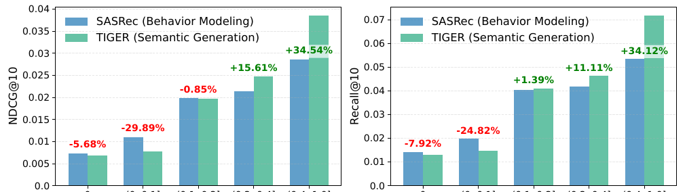
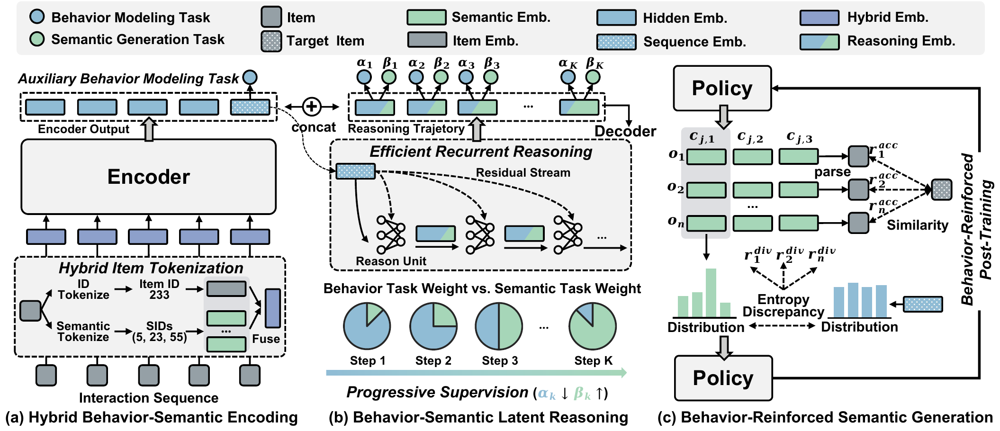

目录 · 9 节
1一个“啤酒和尿布”式的例子2整体流程3混合编码：让编号也带上“谁跟着谁”4隐式推理：从行为空间一步步走到语义空间5强化学习后训练：奖励“行为上对”和“类别上散”6实验结果7局限8如果要试9总评生成式推荐给每个物品编一串 Semantic ID，再让模型逐位生成下一个物品的编号。华南理工大学这篇 KDD 2026 论文发现，这种做法有一个系统性的偏向：用户历史里和目标物品同类的东西越少，它就越不如老式的序列推荐模型。在历史里同类物品为零或不到一成的测试样本上，TIGER（最早用 Semantic ID 做生成式推荐的代表模型）比只看行为的 SASRec（基于自注意力的经典序列推荐模型）低 6% 到 30%。作者提出 OMG（统一行为建模与编号生成的生成式推荐模型），把行为建模和编号生成放进同一个模型。真正拉开差距的是夹在编码器和解码器之间的那几步“隐式推理”，它让表示从行为空间一步步走到语义空间：只加这一个部件，三个数据集的各项指标平均再涨 14.5%，比其他部件加起来还多。最终 OMG 在四个公开数据集上全部超过最好的基线。
这篇的价值在于把“生成式推荐偏爱同类物品”这个直觉量化了，并给出一个代价很小的修补办法，值得做 Semantic ID 生成式推荐的人参考。理由是：推理部件只占模型非 embedding 参数的 0.46%，四步推理只多 0.16% 的计算量，接到现有的 TIGER 式模型上几乎不用改结构。但证据全部来自几万用户规模的公开数据集，后面两个部件的增益很小且不稳定，所以它更适合当一个便宜的离线实验，而不是直接照搬的上线方案。
一个“啤酒和尿布”式的例子
先看一个例子（示意）。用户最近在玩具类目里依次看了这些东西，Semantic ID 的第一位大致对应商品的粗类别：
| 顺序（示意） | 物品 | 第一位编号代表的类别 |
|---|---|---|
| 1 | 磁性画板 | 早教益智 |
| 2 | 木制字母积木 | 早教益智 |
| 3 | 婴儿安抚玩偶 | 毛绒安抚 |
| 4 | 磁性桌面学习画架 | 早教益智 |
| 下一个（真实） | 宝宝洗澡玩具 | 洗浴玩具 |
只看语义，模型会觉得下一个大概率还是早教益智类，于是生成一串同类的积木和画板。但从行为上看，买早教玩具的家长常常接着买洗澡玩具，这两类东西长得一点也不像，却经常前后出现。这就是作者说的“语义偏好偏差”：生成式推荐擅长找“长得像的”，却容易漏掉“经常一起买的”。传统序列推荐模型给每个物品一个独立的 ID 向量，只学谁跟着谁出现，反而能抓住这种跨类的规律。
作者用数据验证了这一点。在 Amazon Sports 数据集上，他们给每个测试样本算一个语义相关度：历史里有多少比例的物品和目标物品的第一位编号相同。按相关度分组后比较两个模型：

相关度为 0 的一组，TIGER 的 NDCG@10（衡量正确答案排得有多靠前的排序指标）落后 5.7%；相关度在 0 到 0.1 之间的一组落后 29.9%；而在历史里四成以上都是同类物品的那组，TIGER 反超 34.5%。所以两种模型的长处正好互补，问题变成了怎么把它们合到一个模型里。
整体流程

| 部件 | 解决什么问题 | 怎么做 |
|---|---|---|
| 混合编码 | 编号本身没有物品级的行为信息 | 物品 ID 向量和编号向量取平均，编码器再加一个“预测下一个物品”的辅助任务 |
| 隐式推理 | 编码器的表示偏行为，解码器要的是语义，两边对不上 | 一个小网络迭代几步，监督目标从行为逐步过渡到语义 |
| 强化学习后训练 | 解码器生成的候选扎堆在同一类 | 用行为相似度和类别多样性做奖励，只在低相关样本上训练 |
骨架和 TIGER 一样，是一个 4 层编码器加 6 层解码器的 T5 式模型，embedding 维度 128。每个物品的 Semantic ID 由 RQ-VAE（残差量化自编码器）对 Sentence-T5 文本向量做三层残差量化得到，前三位撞车的物品再补第四位，保证每个物品编号唯一。
混合编码：让编号也带上“谁跟着谁”
为什么要改编码？标准的生成式推荐只把编号送进模型，一个物品被拆成三四个编号 token。这样物品之间的相似完全由内容决定，两个从不一起出现的同类商品编号几乎一样，而经常一起买的跨类商品编号毫不相干。
OMG 的做法是给每个物品另配一个可学习的 ID 向量，和它各位编号的向量直接取平均，作为这个物品在编码器里的输入。这样一个物品只占一个位置，编码器能按物品粒度学习前后转移。编码器读完整段历史后，最后一个位置的输出当作用户当前意图，再接一个辅助任务：用它在全部物品里预测下一个物品，和 SASRec 的训练目标一样。这个任务逼编码器去学“买了 A 的人接着买 B”，哪怕 A 和 B 的编号毫不相似。
作者试过更复杂的融合方式。把 ID 向量和编号向量拼起来再过一个小网络，效果反而不如直接平均；完全去掉 ID 向量，三个数据集都明显变差。作者给的解释是模型最终要预测的是编号，融合时做太多变换会把编号向量扭曲掉。
隐式推理：从行为空间一步步走到语义空间
只做混合编码还不够，消融实验里它在 Toys 数据集上甚至让 Recall@10 从 0.0557 降到 0.0540。原因在于两个任务对不上：编码器被行为目标训练，表示偏向“下一个是哪个物品”；解码器要生成的是“下一个物品的编号”，需要的是语义信息。直接把偏行为的表示交给解码器，解码器很难用好。
OMG 在两者之间加了一个推理单元。它是一个两层的小网络，从编码器最后一个隐状态出发，每一步把上一步的结果和这个初始状态相加后再过一遍小网络，得到新的状态，一共走 K 步。这和 ReaRec 等方法的思路相似，但那些方法每一步都把状态送回整个主干网络重新跑一遍，成本随序列长度平方增长；OMG 只在一个向量上迭代，所以几乎不增加计算。
光迭代不加约束，中间状态容易乱漂。作者给每一步都加了监督，并且让监督目标逐步变化：每一步同时算两个损失，一个是用当前状态预测下一个物品（行为目标），一个是用当前状态预测下一个物品编号的第一位（语义目标），两者按权重相加。语义权重在最后一步取 1，往前每退一步乘一次衰减系数，行为权重是 1 减去语义权重。于是前几步几乎只学行为，最后一步完全对准语义，中间平滑过渡。 Hoot 说

左右滑动或点箭头看四步。K=4 和 0.3 只是手算示例：论文在 Beauty 上分别报告过这两个取值最好，但没有证明二者是联合最优。 出处: 论文 Eq. 11：β_k = β·γ^(K−k)，α_k = 1 − β_k，β=1；Beauty 上 γ=0.3、4 步最好；γ 试过 0.1 到 0.9
拿上面的例子说：第一步的状态主要回答“这个家长接下来会买哪件具体商品”，可能已经把洗澡玩具排得很靠前；越往后，状态越在回答“下一件商品属于哪一类”。这时它带着前面行为判断的痕迹，不会只盯着早教益智一类。最后，所有中间状态拼在编码器输出后面，一起交给解码器生成编号。
打个比方：这像翻译时先用母语把意思想清楚，再一句句换成外语的说法，而不是一上来就逐词直译。前几步是“想清楚用户要什么”，后几步是“换成编号的语言说出来”。
作者用 t-SNE（一种把高维向量投到平面上的可视化方法）画了几类玩具的推理轨迹，起点和目标编号的向量离得很远，推理状态则沿一条平滑的路径从起点移向目标。衰减系数的实验也支持“慢慢过渡”的设计：系数取 0.1 到 0.3 最好，也就是语义权重往前衰减得快、前几步几乎完全由行为主导。推理步数的最优值因数据而异，Beauty 上 4 步最好，再多反而下降；Sports 上一直加到 10 步还在涨。
强化学习后训练：奖励“行为上对”和“类别上散”
监督训练之后，作者观察到解码器生成的一组候选，第一位编号经常全都一样，也就是十几个候选全挤在同一个粗类别里。而编码器那个“预测下一个物品”的分布要分散得多。OMG 用 GRPO（一种按组内相对得分更新策略的强化学习算法）做后训练，每条序列让模型生成 20 个候选，用两个奖励打分：
| 奖励 | 衡量什么 | 怎么算 |
|---|---|---|
| 准确奖励 | 生成的物品和真实目标在行为空间里像不像 | 两者混合 embedding 的点积 |
| 多样奖励 | 候选的类别分布是否和行为分布一样分散 | 两种分布在第一位编号上各算一个熵，奖励取两者之差绝对值的负数，越接近奖励越高 |
准确奖励用的是连续的相似度，而不是“命中给 1、没中给 0”，因为在几万个物品里直接命中很难，连续分数能给每个候选都提供有用的反馈。多样奖励则把编码器那个更分散的分布当参照，让解码器的输出别过度扎堆。
后训练只用语义相关度最低的那部分样本：Sports 和 Beauty 取最低的 10%，Toys 取最低的 40%。这样做一来省算力，二来避免在模型本来就擅长的高相关样本上把它训坏。和随机挑同样比例的样本相比，按相关度挑样本的提升更大。在 Toys 上，后训练 5 轮后 NDCG@10 从 0.0362 升到 0.0366，物品覆盖率从 0.695 升到 0.727，推荐列表内部的差异度也在稳步上升，说明它主要让推荐更分散，准确率只是小涨。
实验结果
四个公开数据集是亚马逊评论里的 Sports、Toys、Beauty 和 Yelp，序列最长截到 20，用最后一个物品测试、在全部物品上排序。下表是 NDCG@10 的对比，“最强基线”指在该数据集上 NDCG@10 最高的那个对手。表里出现的三个对手分别是 USI（把物品 ID 向量和语义向量拼在一起表示物品的方法）、RPG（用更长的 Semantic ID 并行生成整串编号的方法）和 HSTU（Meta 提出的、直接在物品 ID 序列上建模的生成式序列推荐模型）：
| 数据集 | TIGER | 最强基线 | OMG | OMG 比最强基线 |
|---|---|---|---|---|
| Sports | 0.0195 | 0.0204（USI） | 0.0229 | +12.3% |
| Toys | 0.0291 | 0.0349（RPG） | 0.0366 | +4.9% |
| Beauty | 0.0310 | 0.0374（SASRec） | 0.0398 | +6.4% |
| Yelp | 0.0229 | 0.0237（HSTU） | 0.0251 | +5.9% |
这张表说明两件事。第一，最强基线在每个数据集上都不一样，而且 Beauty 上最强的是只看行为的 SASRec，说明语义偏好偏差在真实数据上确实存在。第二，OMG 在四个数据集上都排第一，对 TIGER 的提升在 10% 到 28% 之间，所以把行为和语义合起来确实比任何一边单独用要好。
逐个加部件的消融更能看出功劳在哪。下表每一行都是相对上一行的提升，取 Sports、Toys、Beauty 三个数据集上 Recall@5、NDCG@5、Recall@10、NDCG@10 共 12 个数的相对提升的平均：
| 依次加入的部件 | 相对上一步的平均提升 |
|---|---|
| 编码端的行为辅助任务 | +3.8% |
| 隐式推理 | +14.5% |
| 推理过程的渐进监督 | +3.6% |
| 强化学习后训练 | +1.8% |
隐式推理一项贡献了大部分提升，这意味着问题的关键不在于“有没有行为信息”，而在于行为信息能不能被解码器用上。单加辅助任务收益很小，Toys 上还略有下降；有了推理单元在中间搭桥，行为信息才转化为生成质量。
成本方面，推理单元只占非 embedding 参数的 0.46%，4 步推理只多 0.16% 的计算量。和 TIGER 相比，推理步数加到 10 步时，每轮训练多花约 12% 的时间，生成一次推荐列表多花约 11%。这说明它的代价主要来自解码器多读了几个位置，而不是推理单元本身。
局限
第一，证据全部来自小规模离线实验。四个数据集都只有几万用户、一两万到三万多个物品，序列最长只取 20 条，指标绝对值也很低，NDCG@10 都在 0.02 到 0.04 之间。工业场景动辄上亿物品、上千条历史，语义偏好偏差的严重程度和推理单元的作用都可能不同，目前也没有线上实验来验证。
第二，后两个部件的增益小且不稳定。强化学习后训练平均只带来 1.8%，在 Beauty 上 Recall@10 前后都是 0.0690，说明这一步在部分数据上基本白做。
它挑选训练样本的比例在 Sports 和 Toys 上分别是 10% 和 40%，推理步数的最优值也从 4 到 10 不等，意味着这些超参是按数据集单独调过的。换到新数据上都要重新搜，所以复现成本比部件本身的计算量高得多。
第三，中等相关的样本仍然是短板。作者在附录里承认，在历史里只有少量同类物品的那一档，OMG 虽然胜过 TIGER，仍不如 SASRec。原因是这类样本的语义信号半真半假，模型还分不清什么时候该信语义、什么时候该信行为。
如果要试
适合已经在用 Semantic ID 做生成式召回、发现候选同质化严重的团队。一个低成本的试法：
- 先复现论文图 1 的分析：用自己的数据按“历史里和目标同类的比例”分组，对比现有生成式模型和一个 ID 序列模型。如果低相关组差距明显，才值得往下做。
- 在现有模型上只加混合编码和推理单元，推理步数从 4 试起，衰减系数从 0.1、0.3 试起，看低相关组的提升和总体提升。
- 推理单元有效再考虑后训练，并同时看准确率和类别覆盖率，因为它的主要作用是让推荐更分散。
- 上线前测好延迟：推理单元本身很便宜，但解码器多读的几个位置在长序列、大束搜索下的成本要实测。
总评
| 维度 | 评价 |
|---|---|
| 问题重要性 | 高。语义偏好偏差是 Semantic ID 生成式推荐的通病，候选同质化在工业上很常见 |
| 方法创新性 | 中。各部件都有前作影子，新意在于用逐步变化的监督把行为表示过渡到语义表示 |
| 实验证据 | 中。四个数据集一致领先且做了逐部件消融，但规模小、没有线上实验 |
| 工程成本 | 低。推理单元几乎不加参数和计算，后训练需要额外调参 |
| 是否值得尝试 | 值得作为离线实验，先验证自己的数据上是否存在低相关样本的明显落差 |
读完这篇，你觉得
夜读鸮记下了，谢谢你的反馈。
点一下即可，无需登录；再点一次撤回。只统计匿名次数，不记录你是谁。
讨论
欢迎补充实验细节、复现经验或不同看法。需 GitHub 登录。
正在加载讨论…